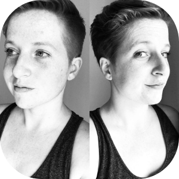

|  |
Erica VanNorman
- Junior Web Developer
- Future Creator of Electronic Bullet Journal
|
Born in New York state, I was raised in a tiny community and spent most of my free time on my grandparent's farm. My teenage years were
spent in Tucson, AZ, and filled with days by the pool, competition cheerleading, and spending time with my
brother. Young adulthood was spent in the southern state of Georgia. I graduated high school, attended state university, and
lived on my own for the first time. I now call Seattle, WA home. I love adventure and travel in my freetime, but can find
me in front of my computer or TV on weeknights. Coffee, whiskey, movie, Barre, video games, streaming, food, travel, photography, yoga, and meditation fanatic.
Education
- High School
- Effingham County High School: TP/CP Certification, Graduated with Honors
- Graduated 2006
- College
- University of Georgia: Mathematics Major, Computer Science Minor
- University of Phoenix: Business Major with emphasis on Project Management
Work Experience
| Location |
Years Employed |
Job Description |
| The Four Seasons Seattle |
September 2019-March 2020 |
- Utilized new luxury dining skills to seemless recreate dining experiences in guests' rooms
- Built unique relationships with each guest, in hopes of amplifying the positive experiences at the hotel
- Maneuver through unpleasent experiences to leave a positive impact on the guest
|
| The W Hotel Seattle |
June 2015-March 2020 |
- Set up a variety of guests requests that include serving food and drinks to guests on all 26 floors of a fine dining hotel
- Work with multiple departments to integrate, cross-train, and implement innovative routines which create lasting memories, while driving up guest satisfaction
- Assist supervisors and managers in creating executable guest recovery options for property
|
| Schneider National Bulk Carriers |
February 2014-May 2015 |
- Managed the accounts of approximately 40 to 60 customers monthly, running 300 to 600 loads each month
- Gained knowledge about transportation; communicating and teaching this to customers
- Increased revenue on multiple accounts
|
Skills
| Food and Beverage: Hospitality |
🌕🌕🌕🌕🌕 |
| Food and Beverage: Restaurant |
🌕🌕🌕🌕🌕 |
| Email |
🌕🌕🌕🌕🌕 |
| Microsoft Word |
🌕🌕🌕🌕🌑 |
| Powerpoint |
🌕🌕🌕🌕🌑 |
| Excel |
🌕🌕🌕🌑🌑 |
| Javascrip |
🌕🌕🌑🌑🌑 |
| HTML |
🌕🌕🌑🌑🌑 |
| QuickBook |
🌕🌑🌑🌑🌑 |
My Hobbies
Interested in contacting me?